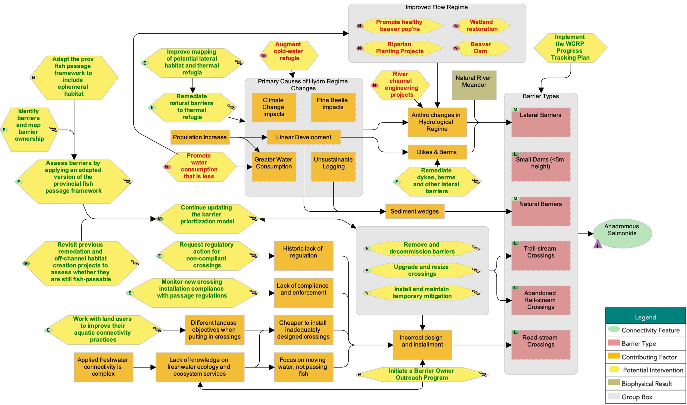
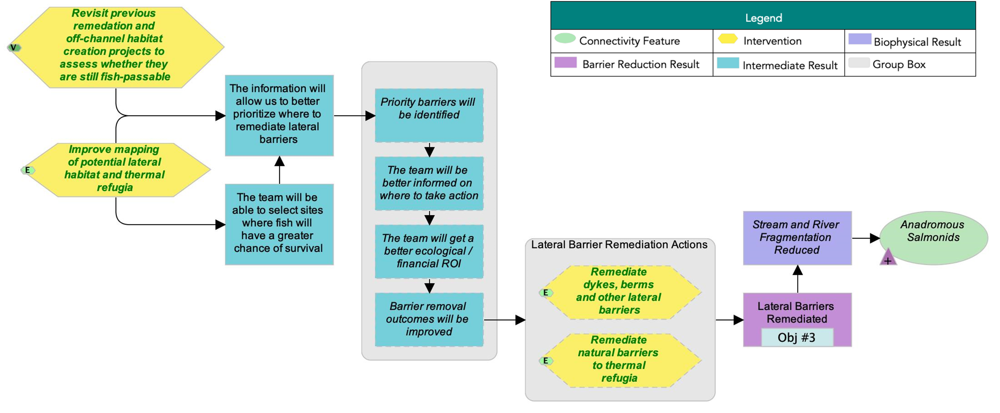
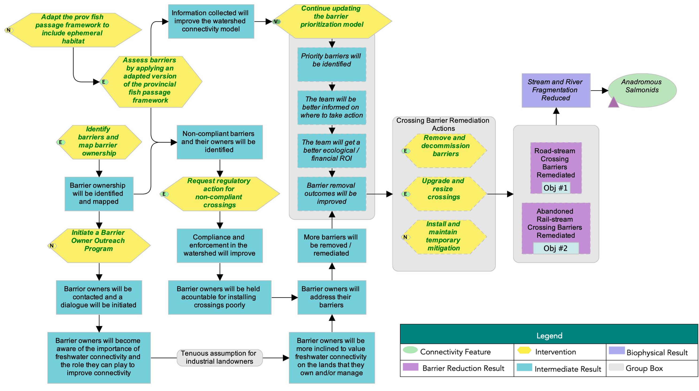
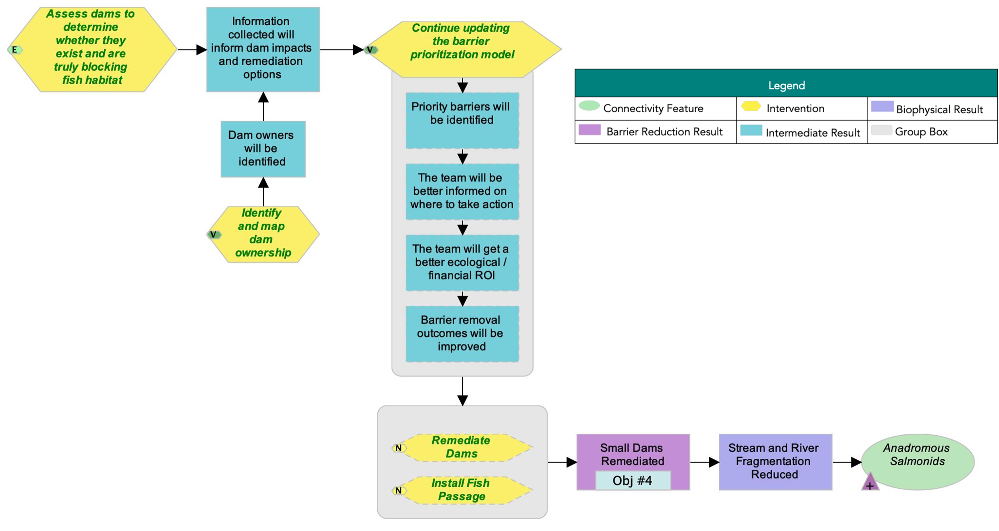
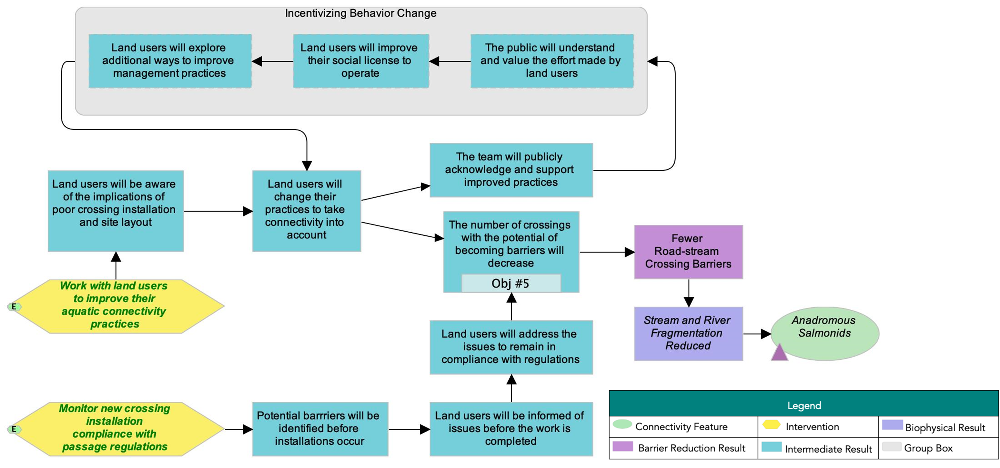

ID | Actions | Details | Feasibility | Impact | Effectiveness |
|---|---|---|---|---|---|
1.1 | Rehabilitate dykes, berms, and other lateral barriers | The group selected a feasibility rating of High based on the assumption that our focus will be on smaller and cheaper projects, such as reconnecting ephemeral habitat and maintenance around the railroad dyke to reconnect wetland habitat. | High | Very high | Effective |
1.2 | Rehabilitate natural barriers to lateral connectivity | This can include various methods, such as beaver dam analogues. | High | Very high | Effective |
1.3 | Knowledge Gap: Improve mapping of lateral habitat and thermal refugia | Thermal imagery collected via drones could be used to map thermal refugia. | High | High | Effective |
1.4 | Knowledge Gap: Revisit previous rehabilitation and off-channel habitat creation projects to assess whether they are still fish-passable | Very high | Very high | Very effective | |
1.5 | Review LiDAR, aerial imagery, and field assessments to determine immediate lateral connectivity needs | Very high | Very high | Very effective |
The following situation model was developed by the WCRP Planning Team to “map” the project context and brainstorm potential actions for implementation. Green text is used to identify actions that were selected for implementation (see Strategies & Actions), and red text is used to identify actions that the project team has decided to exclude from the current iteration of the plan, as they were either outside of the project scope, or were deemed to be ineffective by the Planning Team.

Strategies and Actions
The Planning Team identified five broad strategies to implement through this WCRP: 1) crossing rehabilitation, 2) lateral barrier rehabilitation, 3) dam rehabilitation, 4) barrier prevention, and 5) communication and education. Individual actions were qualitatively evaluated based on the anticipated effect each action will have on realizing on-the-ground gains in connectivity. Effectiveness ratings are based on a combination of “Feasibility” and ”Impact”. Feasibility is defined as the degree to which the project team can implement the action within realistic constraints (financial, time, ethical, etc.), and Impact is the degree to which the action is likely to contribute to achieving one or more of the goals established in this plan.
Strategy 1: Lateral Barrier Rehabilitation
Strategy 2: Crossing Rehabilitation
ID | Actions | Details | Feasibility | Impact | Effectiveness |
|---|---|---|---|---|---|
2.1 | Remove and decommission barriers | High | Very high | Effective | |
2.2 | Upgrade and resize crossings | Examples include installing larger culverts, replacing closed- with open-bottom culverts, or upgrading from culverts to bridges. | Very high | High | Effective |
2.3 | Install and maintain temporary mitigation | This strategy entails retrofitting structures to provide passage until the structure can be replaced or decommissioned. | Medium | High | Need more information |
2.4 | Initiate a barrier owner outreach program | This can include reaching out to the Cattleman's Association, as well as potentially working with producers to adapt water-management practices. The outputs and materials generated could be exported outside the watershed to assist other watershed organizations with landowner engagement as well. | High | Medium | Need more information |
2.5 | Request regulatory action for non-compliant crossings | Request provincial and federal agencies to require that targeted, high-priority barriers be rehabilitated. | High | High | Effective |
2.6 | Knowledge Gap: Identify barriers and map barrier ownership | High | Very high | Effective | |
2.7 | Knowledge Gap: Continue updating the structure prioritization model | The model process will be finalized, and priorities will be updated as new information becomes available. | Very high | Very high | Very effective |
2.8 | Knowledge Gap: Adapt the provincial fish passage framework to account for ephemeral habitat | Ephemeral habitat is especially important in the Lower Nicola River and needs to be accounted for in habitat surveys and evaluated on a case-by-case basis. | High | Very high | Effective |
2.9 | Knowledge Gap: Assess barriers by applying an adapted version of the provincial fish passage framework | The first three steps are (1) barrier assessments, (2) habitat confirmations (including of ephemeral habitat), and (3) rehabilitation designs. | High | Very High | Effective |
Strategy 3: Dam Rehabilitation
ID | Actions | Details | Feasibility | Impact | Effectiveness |
|---|---|---|---|---|---|
3.1 | Remove dams | Medium | Very high | Need more information | |
3.2 | Install fish passage | Medium | High | Need more information | |
3.4 | Knowledge Gap: Continue updating the barrier prioritization model | The model process will be finalized, and prioritizations will be updated as new information becomes available. This can also include data related to flows. | Very high | Very high | Very effective |
3.5 | Knowledge Gap: Assess dams to determine whether they exist and are truly blocking fish habitat | Focus on identifying ownership of priority dams that we want to rehabilitate in the short term. | Very high | High | Effective |
3.6 | Knowledge Gap: Identify and map dam ownership | Very high | Very high | Very effective |
Strategy 4: Barrier Prevention
ID | Actions | Details | Feasibility | Impact | Effectiveness |
|---|---|---|---|---|---|
4.1 | Work with land users to improve their aquatic connectivity practices | This can be done through the barrier ownership program, or for landowners that do not currently own barriers, this could include encouraging better consultation before crossings are installed. | High | High | Effective |
4.2 | Monitor new crossing installation compliance with passage regulations | Very high | High | Effective |
Strategy 5: Partner Development
ID | Actions | Details |
|---|---|---|
5.1 | Engage and explore integration with existing regional initiatives | Engage and coordinate with the Nicola Watershed Governance Project and Fraser Basin Council initiatives (e.g., Risk Assessment Methodology for Salmon) to inform decision-making and implementation related to the strategies developed in this plan. These strategies will be shared with local First Nations, DFO, and others to inform coordinated efforts to restore fish productivity in the watershed. Connectivity work will be incorporated where appropriate to achieve the greatest returns and longevity of benefits. |
Theories of Change
Theories of change explicitly state assumptions around how the identified actions will achieve gains in connectivity and contribute to achieving the goals of the plan. To develop theories of change, the Planning Team developed explicit assumptions for each strategy to clarify the rationale used for undertaking actions and provided an opportunity for feedback on invalid assumptions or missing opportunities. The theories of change are results oriented and clearly define the expected outcome. The following theory of change models were developed by the WCRP Planning Team to “map” the causal (“if-then”) progression of assumptions of how the actions within a strategy work together to achieve project goals.



